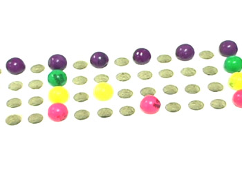
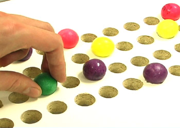

Bubblegum Sequencer
Making music with candy. A drum machine you program by dropping gumballs into holes.
Click the holes. This one is real, it just has no gumballs in it.
What it is
The Bubblegum Sequencer is a physical step sequencer. A grid of holes is the canvas. You arrange coloured gumballs on it. The sixteen columns are the sixteenth notes in a bar, and each colour is a sound.
A camera under the surface watches the holes and works out which colour is sitting in each one. What you see on the board is what you hear.
Finally, people can't claim anymore that electronic music isn't handmade.
Built in 2007 for the course Theory and Practice of Tangible User Interfaces at UC Berkeley's School of Information, and rebuilt from scratch in 2026.
See it




Build one
This is the part that is new. In 2008 the grid was lined up by hand and the colours were set with a screen full of sliders, and the honest advice at the time was that you would have to hack at it for a while. The rebuild is meant to be buildable by someone who is not me.
Roughly what it takes:
| The surface | A sheet of black acrylic about 47 by 50 cm, with 64 holes in it, four rows of sixteen, about 2.5 cm apart. Sanded underneath so it does not glare. |
| The box | A plain plywood box about 46 by 50 cm and 28 cm deep, painted white inside. The sheet lies on top. |
| The camera | Any cheap 1080p webcam with a wide lens, sitting on the floor of the box looking up. About 30 euros. |
| The light | LED strips low on the inside walls, pointing up and inwards. |
| The markers | Four printed tags stuck to the underside of the sheet. These are what let you shove the board around while it plays. |
| The gumballs | Standard ones, about 2 cm, in four colours. |
Then three commands. The first takes about twenty seconds, the second walks you through setting the camera up and teaching it the colours, and the third is the instrument.
# get it git clone https://github.com/thetable/bubblegumsequencer cd bubblegumsequencer # set it up, once uv run setup.py # play uv run play.py
macOS for now. Proper drawings, a cut list and step by step instructions to follow. In the meantime the source is on GitHub.
How it works
A camera about 23 cm under a scratched black sheet, through a lens wide enough to bend the rows. Most of what the software does is undo something you can see going wrong in the first frame.
What the camera sees
The rows bow outwards, the corners go dark, and the light strips are in shot. An empty hole is not reliably darker than a full one, so no single brightness will tell them apart.
Even out the light
Divide the picture by a blurred copy of itself. What is left is how much brighter each thing is than whatever is immediately around it, and that reads the same in a dark corner as in the bright middle.
Find the holes
Keep the round blobs of roughly the right size. Every hole is the same size, so the picture sets its own scale and there is no number to type in. It never finds all 64 at once.
Find the markers
Four printed tags on the underside say where the board is. Three of them is enough, which is why you can push the board around mid-bar and the grid keeps up.
Put the grid back
The grid was measured once and saved. Every frame it gets laid back onto wherever the markers say the board is, so holes the camera cannot quite make out still end up in the right place.
Read each hole
Take the middle colour from inside each one and throw away the brightest few percent first, so a reflection off a shiny shell cannot drag the answer around.
Name the colours
Each hole gets the nearest colour you taught it. Nothing is taught about empty: a hole is empty when no colour fits. On a bright afternoon that is not quite enough, because daylight coming down through an empty hole can look like a pale ball, so it also has to be shaped like one, brighter in the middle than at the edge, the way a lit sphere is.
What changed since 2008
| 2008 | 2026 | |
|---|---|---|
| Finding the grid | Lined up by hand, and it drifted | Four printed markers, found fresh in every frame |
| Reading a colour | The average of 25 pixels, which one reflection could throw off | The middle colour of about 2000 |
| Settings | A window full of sliders | None. You show it the balls and it works them out |
| Sound | MIDI, through a driver you had to install | A browser tab |
| Software | Java and ImageJ | Python and OpenCV |
| Getting it running | "You'll probably need to hack around for a while" | Three commands |
The original paper was blunt about what went wrong: "the sensitivity of the camera presented the most significant problem. Shadows and other visual noise..." Most of the rebuild is an answer to that.
The original
The first Bubblegum Sequencer was made by Hannes Hesse, Andrew McDiarmid and Rosie Han in the autumn of 2007. It went to Maker Faire, and for a few weeks in January 2008 it was on rather a lot of blogs.